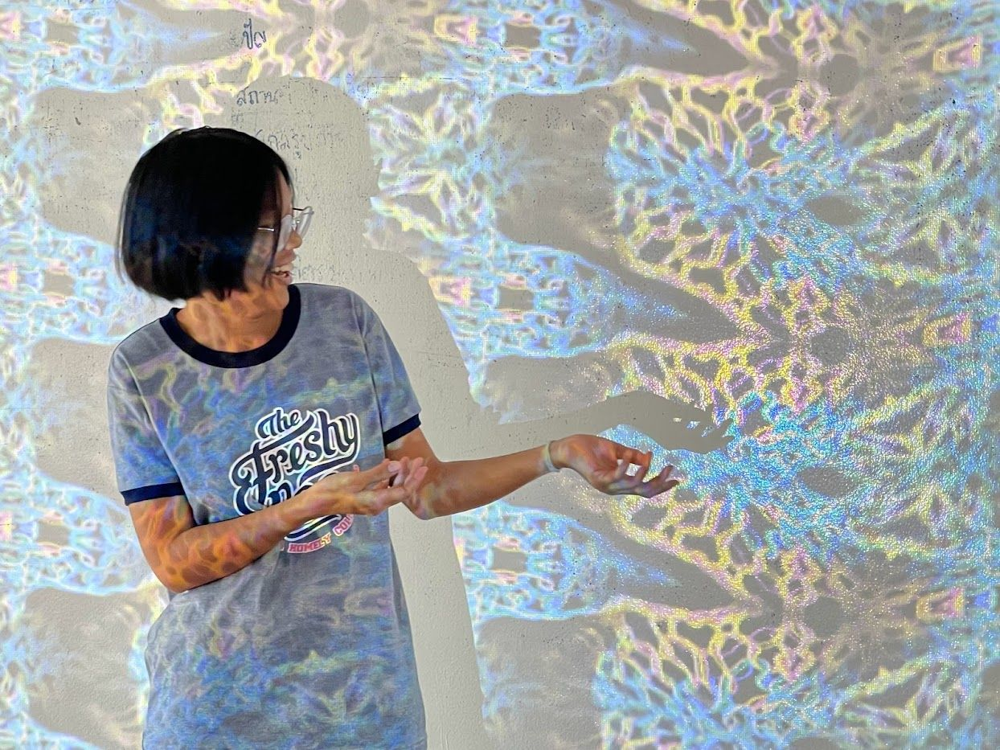
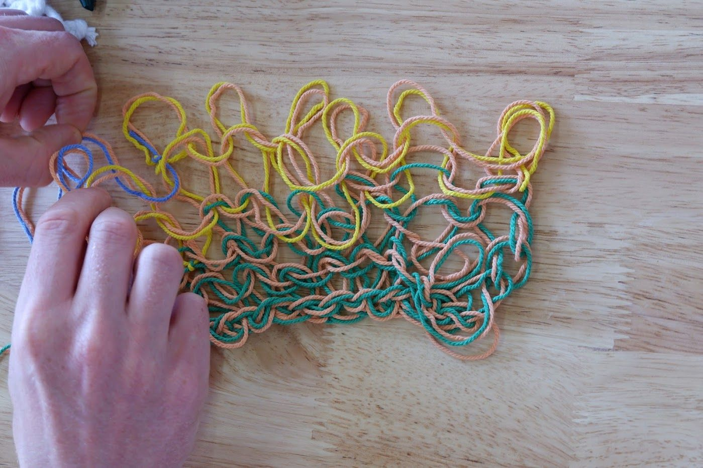

CRAFTROOM is a project that aims to create experimental space through local materials and costs in design and art, communicating in a new format to expand the audience. Inside Thread & Treat Workshop, seiywstudio will teach basic weaving techniques. We’ll discuss and create the concept “Chiang Mai in our eyes” by starting with free writing to evoke experiences and memories of the area. Participants will learn the design process and take home their own fabric piece. They can also use it to create interactive visual art with tomorrow.lab.
